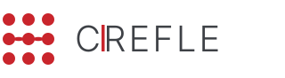

고객이 받는 것
현장이 실제로 쓰는 기능을 3대 영역으로 만든다. 완료된 상태를 단순 입력하면 MES가 판정·집계·추적을 자동 산출하고, ERP·추적성 시스템 영역은 중복 없이 연계한다.
완료 상태 단순 입력
스캔·터치로 완료 결과만 입력 → 판정·불량률·추적 자동 산출
ERP · 추적성 연계
발주·재고·LOT 추적은 중복 없이 연계. MES는 입력 데이터를 공급
현장 검증 후 확정
LOT 발행·포장 정책 등은 현장 방문에서 함께 확정
 02 / 18
02 / 18만들어지는 기능
 03 / 18
03 / 18성격이 다른 세 영역
1 · 정보 관리
완료 상태 단순 입력운영 정보를 완료 상태로 입력해 축적·집계·추적. 검사·공정 전 과정을 통제하지는 않는다.
2 · 자재 창고 관리
행동(Action) 기반입고부터 생산 투입까지 자재 상태를 행동에 따라 관리. LOT 번호 기준으로 추적한다.
3 · 제품 출하 관리
공정(Process) 기반출하창고 입고부터 출하까지 공정에 따라 관리. 납품라벨을 생산LOT과 맞춰 추적한다.
04 / 18모듈별 기능
기준정보관리
생산관리
공정관리
현장관리 (POP)
품질관리
설비관리
툴(생산도구)관리
모니터링
자재 창고 · 제품 출하는 다음 장의 상태 흐름으로.
05 / 18상태로 흐른다
자재 — 행동(Action) 기반
제품 — 공정(Process) 기반
06 / 18이렇게 사용합니다
07 / 18자재를 입하·검사·입고한다
작업지시를 편성·배포한다
08 / 18생산 실적과 LOT을 등록한다
피킹·검사·포장해 출하한다
09 / 18검사하고, 역추적으로 원인을 찾는다
현장을 실시간으로 모니터링한다
10 / 18P/O 한 건이, 출하까지
앞의 여섯 시나리오(자재·생산관리·현장·출하·품질·관리)는 실제로 하나의 흐름입니다 — 행동은 완료 상태 단순 입력, 추적은 LOT이 전 구간을 관통합니다.
11 / 18데이터로 남습니다
12 / 18기능이 남기는 데이터
기준정보 16
생산 실행 7
LOT / 추적 5
품질 6
설비 / 툴 7
물류 / 재고 10
기준정보(품목·BOM·공정·설비·툴·작업자·품질)는 ERP→MES 연계 수신(원본 p.54, MES 수정·삭제 불가) · 창고/Location은 MES 등록 · 자재·제품 입출고는 ERP 발주·출하지시와 연계하되 LOT 발번은 MES
13 / 18어떤 기능이 어떤 데이터를 만들고 쓰나
| 기능 (액터) | 만드는 · 쓰는 데이터 | 어떻게 표현되나 |
|---|---|---|
| 작업지시 편성 생산관리자 | 만듦 작업지시(W/O) · 씀 P/O·품목·Routing·설비·작업자·툴 | P/O를 세부공정 W/O로 전개, 자원 배정 OK/NG 기록 |
| 작업 실적·LOT 등록 현장 작업자 | 만듦 작업실적·생산LOT·인식표·4M투입 | 생산LOT No 발행, 인식표=LotNo+seq, 투입 4M 라인 |
| 자재 입하·입고 자재창고 | 만듦 입하·입고·자재LOT·재고 | 수입검사 합/불 → 자재LOT 발행, 재고=품목+LOT+Location |
| 검사·판정 품질담당 | 만듦 검사·검사결과·Lot Status·SPC | 결과값→합/불·불량률·SPC, Lot Status(Hold/Release) |
| 제품 출하 제품창고 | 만듦 제품LOT·포장·출하 · 씀 생산LOT | 제품LOT No, 납품라벨 ↔ 생산LOT Matching |
| 역추적 조회 품질·CS | 읽음 인식표→생산LOT→자재투입이력→자재LOT | 정·역전개 LOT Traceability로 계보·제조이력 조회 |
§1 기능 · §2 사용 시나리오와 같은 데이터를 가리킨다 — 화면에서 한 행동이 곧 한 레코드.
14 / 18자재 → 생산 → 제품, 그리고 역추적
역추적 — 인식표 하나로
생산품 인식표(QR) 스캔 → 생산LOT 식별 → 투입 자재LOT·공정 검사·작업·설비 이력을 역전개로 한 번에 조회 (시나리오 ③)
현장에서 확정할 부분
생산LOT ↔ 제품LOT 승계(포장 합병·분할 시 1:1 또는 N:M)와 LOT 발행 주체(MES/ERP)는 현장 포장 정책에 따라 확정
15 / 18현장 방문에서 함께 확정합니다 답이 데이터 모델·개발 범위를 결정 — 핵심만 발췌 · 전체(일부 확정)는 현장 검증 질문지에 정리
ERP 연계 경계 최우선
- · 자재 · 제품 LOT 발행 주체 — MES vs ERP?
- · 입출고 · 트랜잭션 번호 발번 — MES vs ERP?
- · ERP 수신 · 송신 범위 — P/O · 기준정보 · 실적?
데이터 키 · 정규화
- · 재고 식별자 — 품목 + LOT + Location 복합키?
- · BOM Rev · Routing 공정Ver — 키 구성?
- · 검사 실적 — 검사항목별 라인 분리?
소유 경계 중복 제거
- · 전달사항 — 생산관리 vs 현장?
- · 불량 실적 — 품질 검사 vs 현장?
- · 수입검사 · 예비품 · SPC — 소유 모듈?
운영 규칙 · 도입 범위
- · Lot Status 통제 · 작업 전 점검 통제 규칙?
- · 포장 합병 / 분할 추적 승계 규칙?
- · 옵션 기능군(IoT · Analytics · EWS) 도입 범위?
16 / 18현장 검증 후, 개발로
위 확인 사항을 비나 법인 현장 방문(STEP 3)에서 합의한 뒤, 데이터 모델 · 개발 범위를 확정해 개발에 착수한다.
17 / 18무엇을 만들고, 어떻게 쓰는가 —
현장과 함께 확정해 만든다.
완료 상태 단순 입력 · LOT 단위 추적 · ERP 연계 — 고객 실요구에 최적화된 MES.

CREFLE OMF 팀 · 삼진엘앤디 베트남법인18 / 18